|
Roda JC - FC Groningen (5-1) 13 mei 2003 |
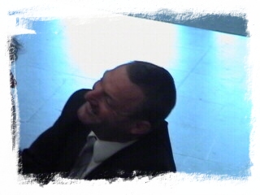
Na 18 jaar weer in Kerkrade: Ron Jans, deze
keer niet als speler maar als trainer.
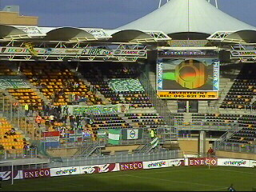
Na een flinke regenbui brak de zon door. Het
gastenvak telt bijna 100 Groningensupporters.
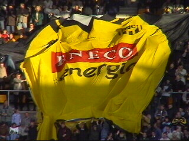
Het Roda-shirt zeilt over de zuidtribune.
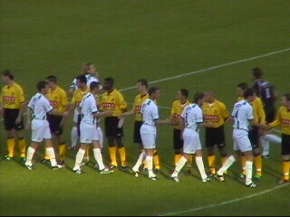
Aanvang van een belangrijke wedstrijd.
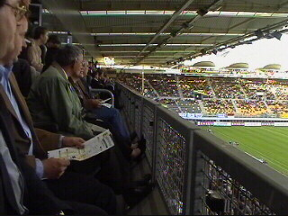
Het bordes voor de skybox van dhr. Hendriks.
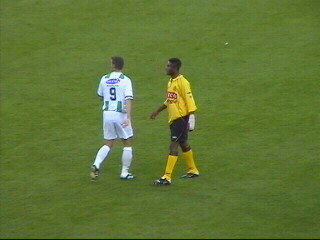
Addo met ingepakte pols.
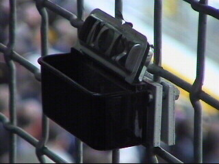
Hier kun je je sigaar afkloppen.
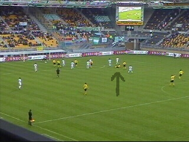
Sergio schiet keihard diagonaal in en passeert
Beukenkamp: 1-0 (31').
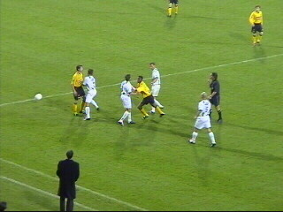
Don't mess with Addo....
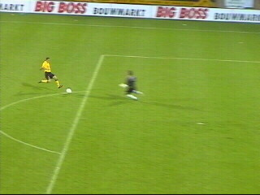
Sergio omspeelt de doelman...
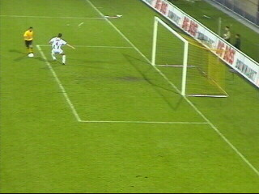
....kapt een toegesnelde verdediger uit...
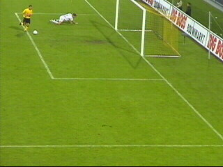
...en loopt beheerst de 2-0 binnen (58').
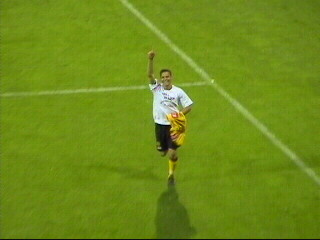
God is geweldig!
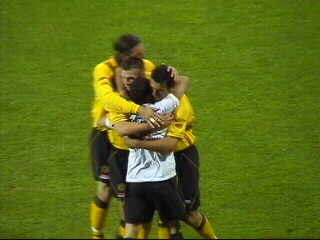
Vreugdevol moment.
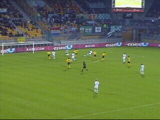
In de 62e min scoort Ikedia 1-2.
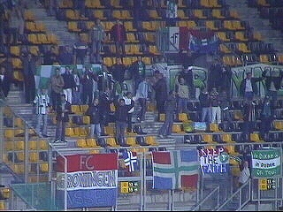
Keep the faith!
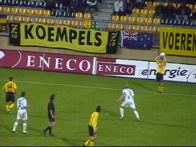
De sfeer in het stadion was geweldig.
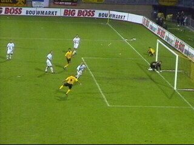
Nadat een streep van Van Dessel de paal raakt
kan Cristiano de teruggesprongen bal mooi
inschieten: 3-1 (69').
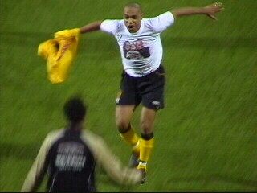
I think I can fly....
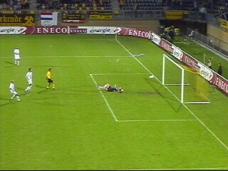
In de 84e min. brengt Anastasiou de stand op 4-1.
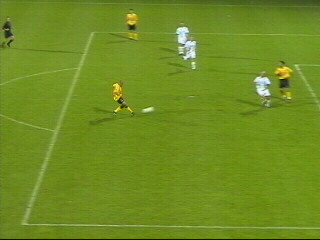
Cristiano verhoogt de score naar 5-1 (86').
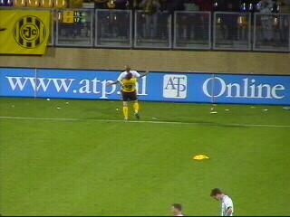
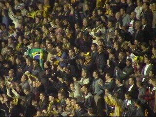
Het tevreden publiek.
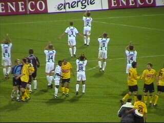
De spelers van FC Groningen bedanken hun fans.
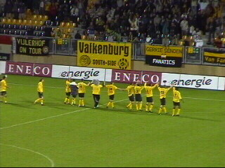
Deze keer is het bedankje spontaan.
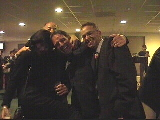
Ik ken ze niet, maar ze wilden op de foto.
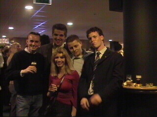
Het is vrijwel onmogelijk een foto te maken
zonder Cox 10 erop te krijgen ;-)
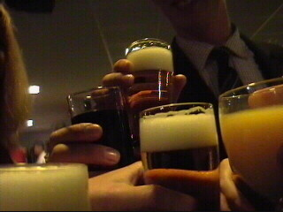
Een toast op de 4e plaats.
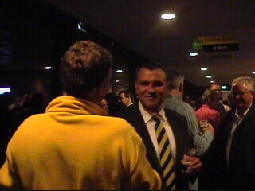
Wiljan kan weIMG SRC="roda-groningen_mei2003zc.jpg" WIDTH="320" HEIGHT="240" ALIGN="BOTTOM" BORDER="0">
Wiljan kan weer lachen hoewel dat niet vanwege
Arie Obdam zal zijn :-)))